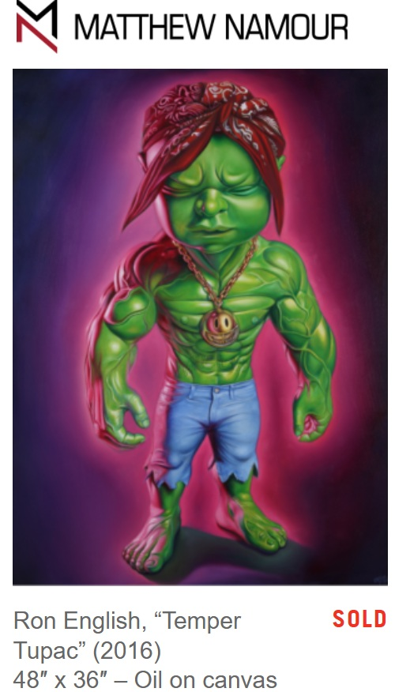
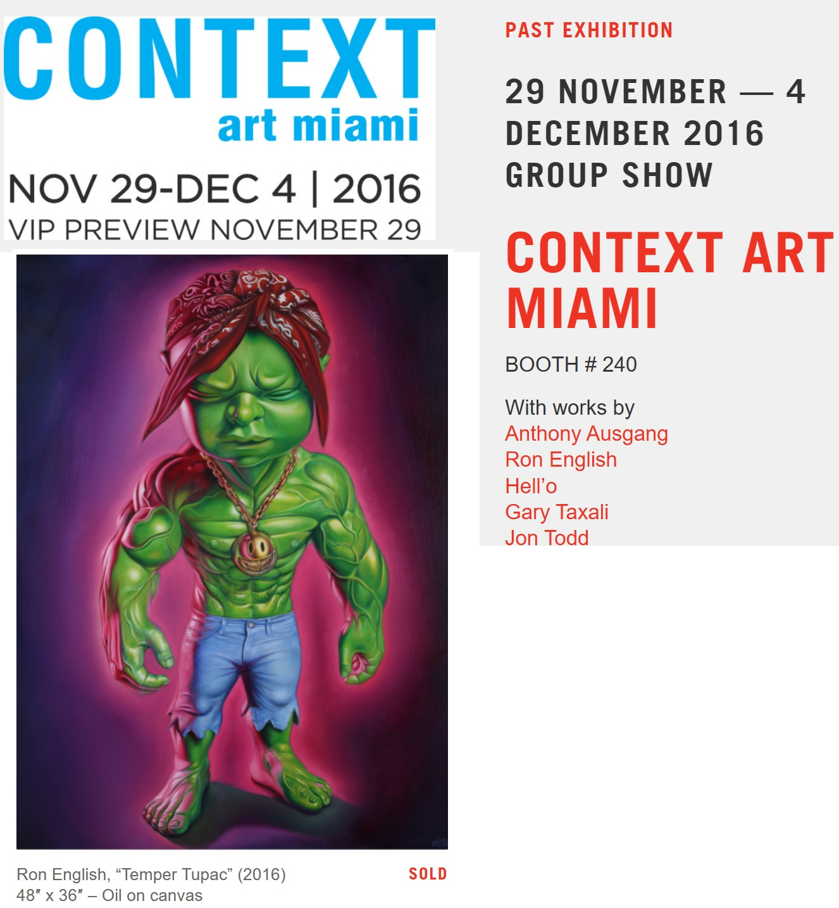
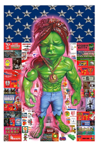

Exhibitions
Grand Opening, Galerie Matthew Namour, Montréal, Quebec, Canada, June 29–August 28, 2016.
Context Art Miami, Galerie Matthew Namour, Booth 240, Miami, Florida, US, November 29–December 4, 2016.
1st Birthday!, Galerie Matthew Namour, Montréal, Quebec, Canada, June 29–July 30, 2017.
Notes
Also known as Temper Tupac, the title used by Matthew Namour Gallery.
The work references Tupac Shakur.
Ancillary Documentation
The following materials document the work-in-progress image, figure reference, gallery documentation, exhibition context, and related screenprint.




Selected Online Circulation
Selected examples of the work’s online circulation, reproduction, or discussion. This list is not exhaustive; it is intended to document representative appearances of the image beyond formal exhibition and publication records.